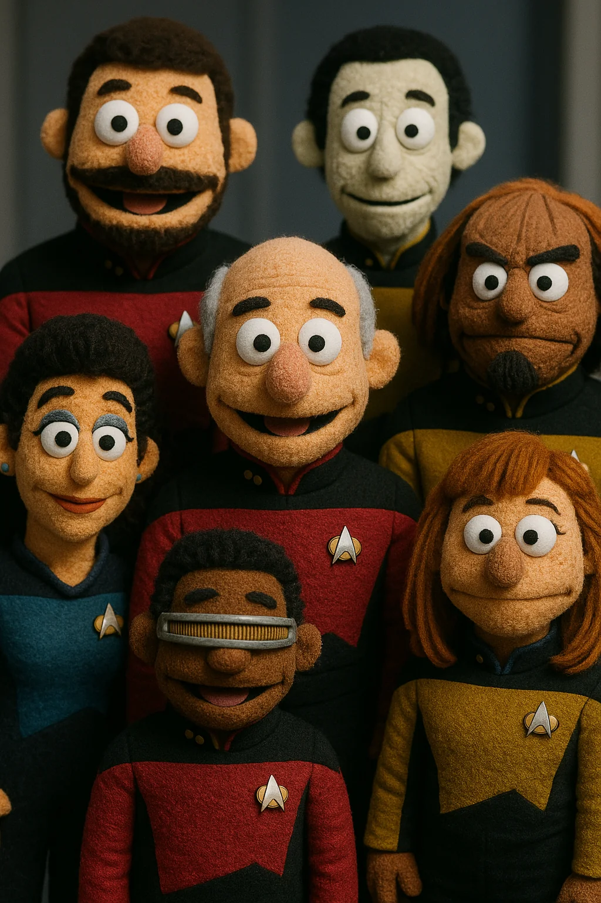

1. Captain Jean-Luc Picard
2. Commander William Riker
3. Lieutenant Commander Data
4. Lieutenant Worf
5. Lieutenant Commander Geordi La Forge
6. Counselor Deanna Troi
Command division (Captain, First Officer)
Operations division (Engineering, Security)
Science and Medical division